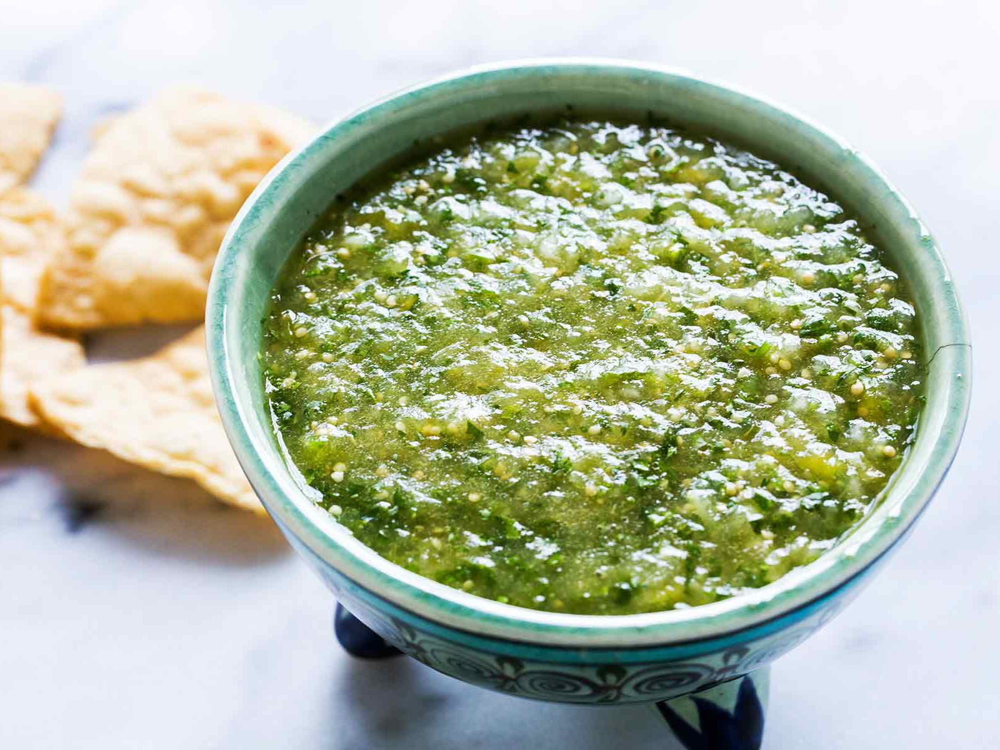

Salsa Verde
Things you will need:
- 1lb tomatillos
- 4 cloves fresh garlic
- 1/2 lb jalapenos
- 1 Bunch cilantro, not the soapy kind
- 4 oz spinach
- Juice of 1/2 lime
- 2 cups vinegar
- (optional) you may use 1/4 tsp xanthan gum to thicken
- Thats it, very easy!
Directions
- Place tomatillos, jalapenos, garlic under broiler
to achieve a deep brown color(dont be scared)
- Place charred vegetables as well as fresh into blender
and blend till smooth, season as desired
- (optional) add xanthan gum to thicken
- place into another container, into sauce bottle
should you desire, put it on everything even blueberry
greek yogurt
